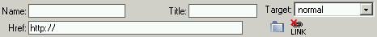

In both Mozilla and MSIE browsers, in order to make a link, you must select a text or an image and then click on the Link button from the toolbar. When clicking inside the link, the Link Inspector is displayed, to help you set a target, a link name and the actual link.
- Target – this field is a dropdown menu which you can use to define the window that will display the targeted page. Possible values: normal, new window, current window, current frame, parent frame;
- Name – defines the link name;
- Href – the textfield where users should enter the correct URL address of the targeted page;
- Title – the text entered here will be displayed when the mouse pointer is placed over the link (in the most common browsers);
- Browse for File – this button opens the KTML File Navigator, that allows you to create links to files;
- Remove Link – this button will delete the currently edited link.
Note: You cannot enter values in both the Name and the Href fields. The Name field is only used to create anchors, while the Href field is used to create the actual links. If you have already created a link and you want to edit the Name field, a dialog window will be displayed with the following message: "Do you want to transform this link into an anchor? (the old URL will be deleted)".
Caution: If you have a link applied to a picture and you want to set the link properties, the simple act of selecting the picture will not open the Link Inspector but the Image Inspector. In order to configure the link, click on the tag from the Tag Selector.